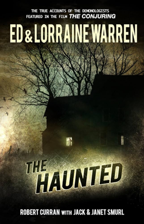
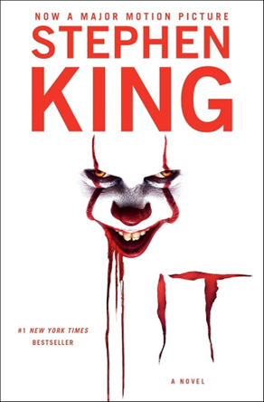
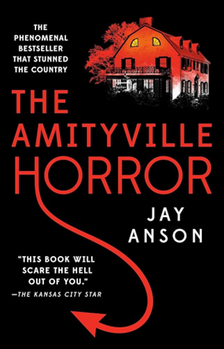

Description
The world s most famous demonologists, Ed & Lorraine Warren, were called in to help an average American family who were assaulted by forces too awesome, too powerful, too dark, to be stopped. It s a true story, supported by dozens of eyewitnesses neighbors, priests, police, journalists, and researchers. The grim slaughterhouse of odors. The deafening pounding. The hoofed half-man charging down the hall. The physical attacks, a vicious strangling, failed exorcisms, the succubus... and the final terror which continued to torment the Smurls. In this shocking, terrifying, deeply absorbing book rivaled only by The Amityville Horror a case also investigated by the Warrens journalist Robert Curran digs deep into the haunting of the Smurl home in West Pittston, Pennsylvania, and the unshakeable family bonds that helped them survive. Don’t miss the new film "The Conjuring: The Devil Made Me Do It” based on the Warrens’ case files. Books by Ed & Lorraine Warren also include Graveyard, Ghost Hunters, In a Dark Place, Werewolf, and Satan's Harvest.
ORDER NOW
Description
Welcome to Derry, Maine. It’s a small city, a place as hauntingly familiar as your own hometown. Only in Derry the haunting is real. They were seven teenagers when they first stumbled upon the horror. Now they are grown-up men and women who have gone out into the big world to gain success and happiness. But the promise they made twenty-eight years ago calls them reunite in the same place where, as teenagers, they battled an evil creature that preyed on the city’s children. Now, children are being murdered again and their repressed memories of that terrifying summer return as they prepare to once again battle the monster lurking in Derry’s sewers.
ORDER NOW
Description
In December 1975, the Lutz family moved into their new home on suburban Long Island. George and Kathleen Lutz knew that, one year earlier, Ronald DeFeo had murdered his parents, brothers, and sisters in the house, but the property—complete with boathouse and swimming pool—and the price had been too good to pass up. Twenty-eight days later, the entire Lutz family fled in terror. This is the spellbinding, shocking true story that gripped the nation about an American dream that turned into a nightmare beyond imagining—“this book will scare the hell out of you” (Kansas City Star).
ORDER NOW